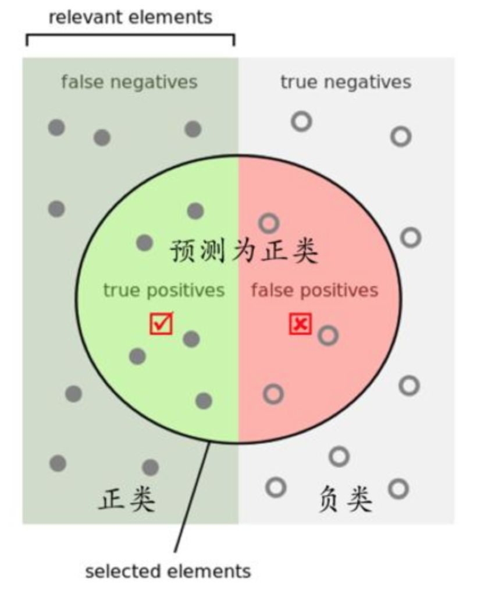
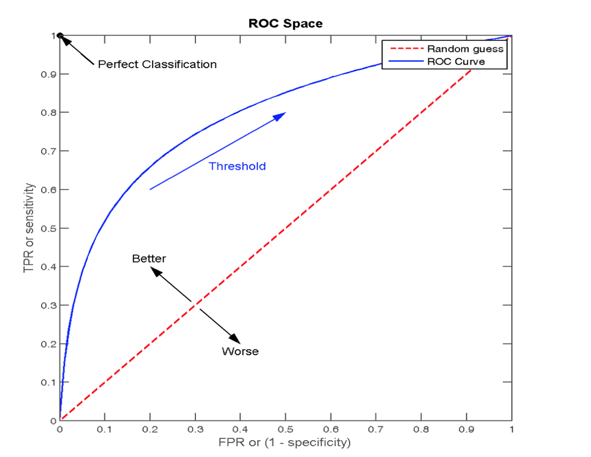

在分类任务下，预测结果(Predicted Condition)与正确标记(True Condition)之间存在四种不同的组合，构成混淆矩阵(适用于多分类)


那么怎么更好理解这个两个概念

还有其他的评估标准，F1-score，反映了模型的稳健型

sklearn.metrics.classification_report(y_true, y_pred, labels=[], target_names=None )print("精确率和召回率为：", classification_report(y_test, lr.predict(x_test), labels=[2, 4], target_names=['良性', '恶性']))
假设这样一个情况，如果99个样本癌症，1个样本非癌症，不管怎样我全都预测正例(默认癌症为正例),准确率就为99%但是这样效果并不好，这就是样本不均衡下的评估问题

最终AUC的范围在[0.5, 1]之间，并且越接近1越好
from sklearn.metrics import roc_auc_scoresklearn.metrics.roc_auc_score(y_true, y_score)# 0.5~1之间，越接近于1约好
y_test = np.where(y_test > 2.5, 1, 0)
print("AUC指标：", roc_auc_score(y_test, lr.predict(x_test)))